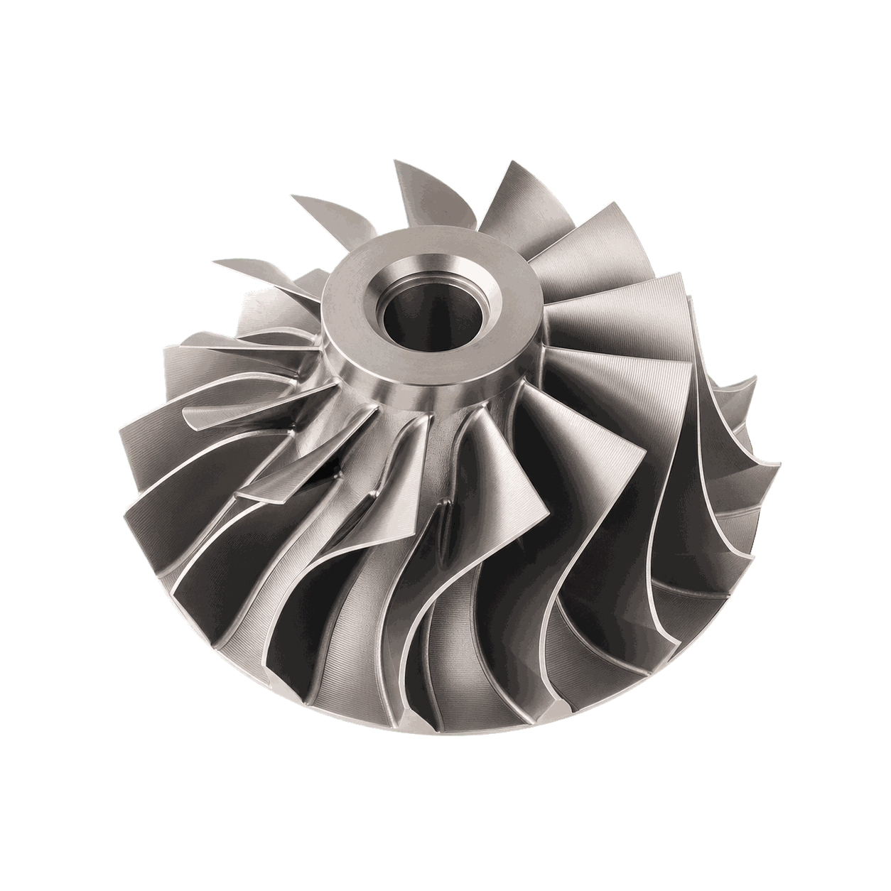
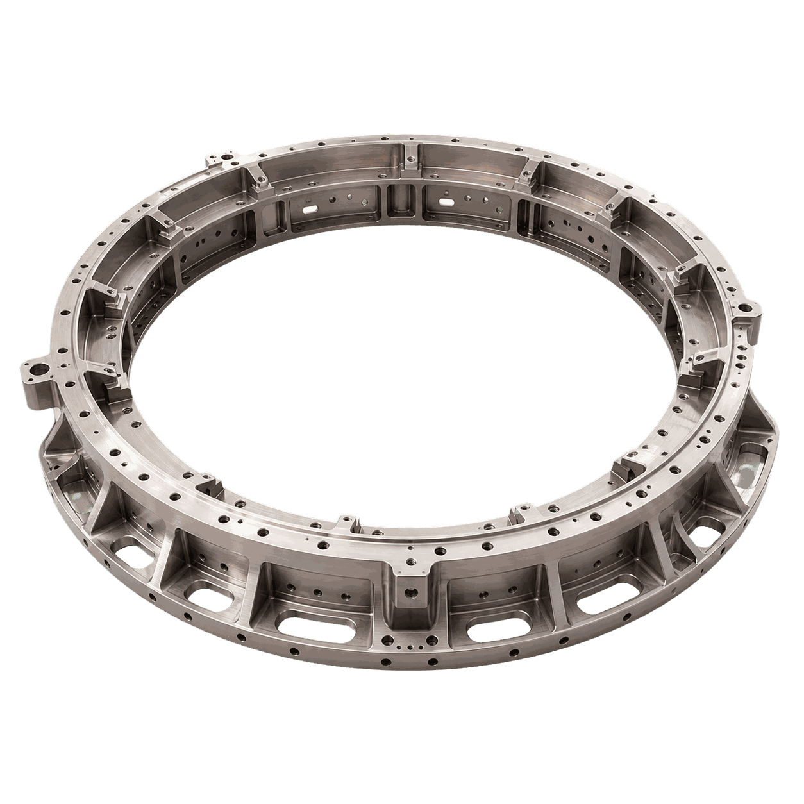
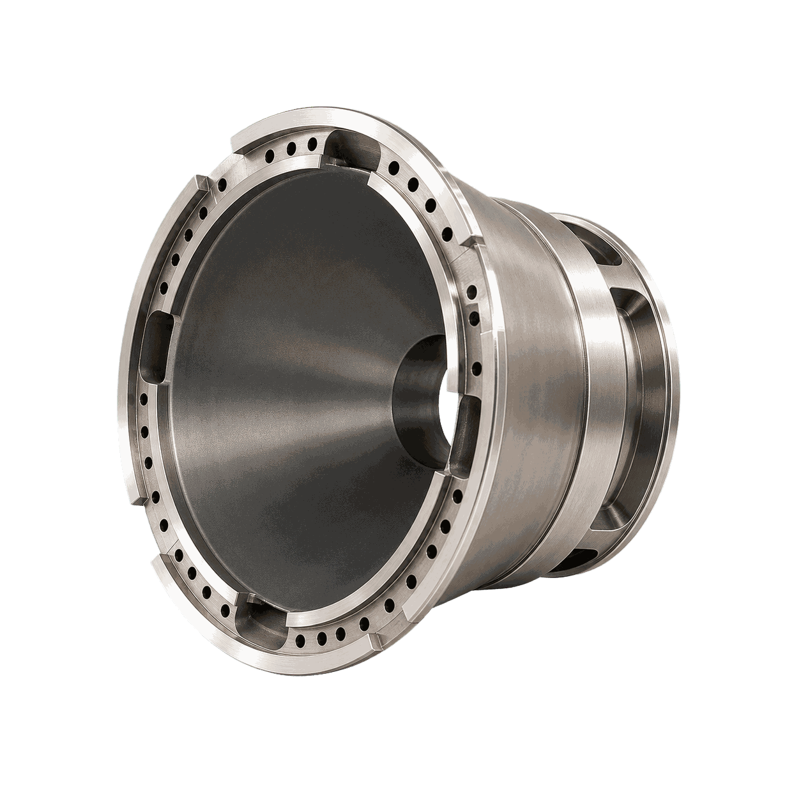
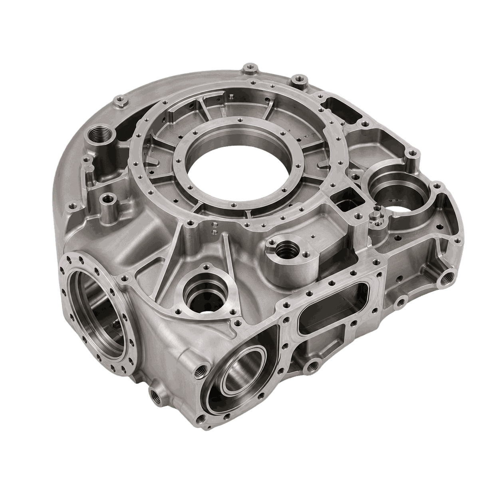
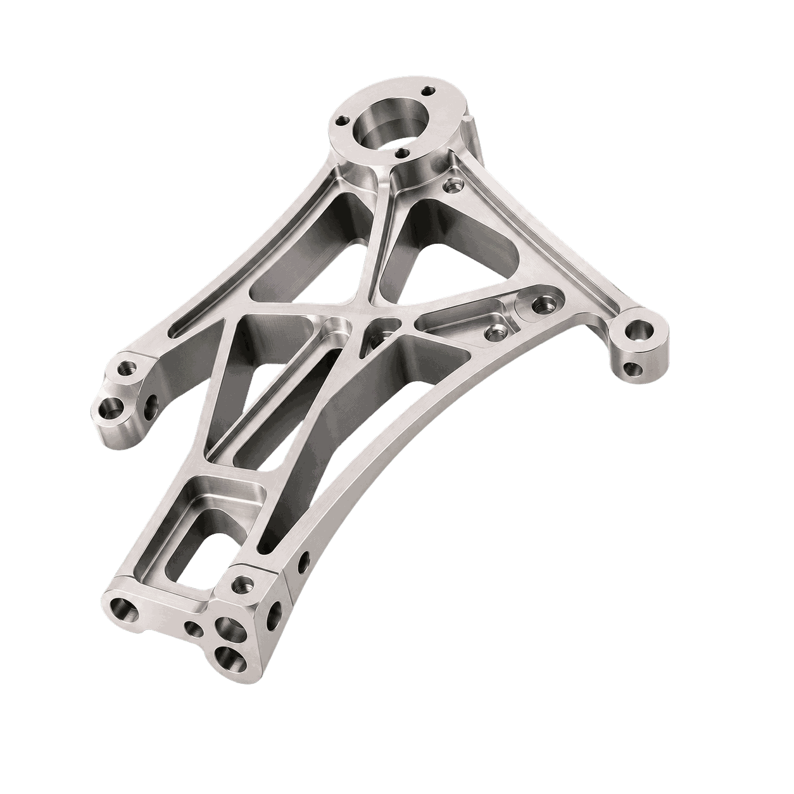
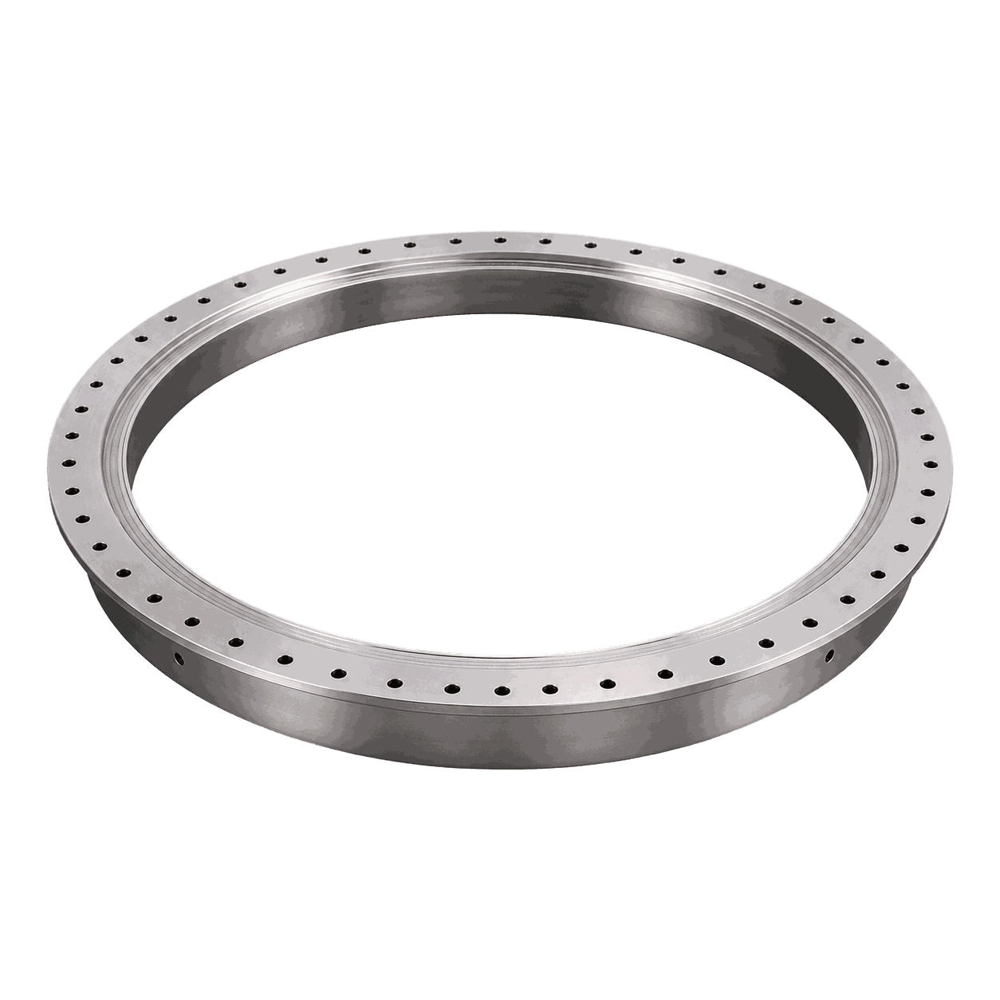

Крыльчатка насоса
Технологическая задача
Обработать сложный профиль детали «Крыльчатка насоса» с выдерживанием формы лопаток, посадок и балансировочных баз.
Космическая промышленность: детали, технологии, оборудование
Решения для точных корпусных и силовых деталей космической техники: лёгкие сплавы, сложная геометрия, стабильное базирование и контроль.

Обработать сложный профиль детали «Крыльчатка насоса» с выдерживанием формы лопаток, посадок и балансировочных баз.

Сформировать базовые плоскости, контуры и отверстия детали «Шпангоут» без потери геометрии на крупной заготовке.

Построить маршрут обработки детали «Сопловой вкладыш» с понятным разделением операций и подбором оборудования под каждую операцию.

Обеспечить точность базовых плоскостей, посадочных отверстий и сопрягаемых поверхностей детали «Прецизионный корпус».

Построить маршрут обработки детали «Кронштейн» с понятным разделением операций и подбором оборудования под каждую операцию.

Построить маршрут обработки детали «Фланец бака» с понятным разделением операций и подбором оборудования под каждую операцию.
Разрабатываем маршрут обработки и подбираем оборудование под требования детали.
Гарантируем точность, повторяемость и соответствие стандартам отрасли.
От подбора оборудования до ПНР, наладки и сервисного сопровождения.
Оптимизируем цикл обработки и снижаем себестоимость детали.